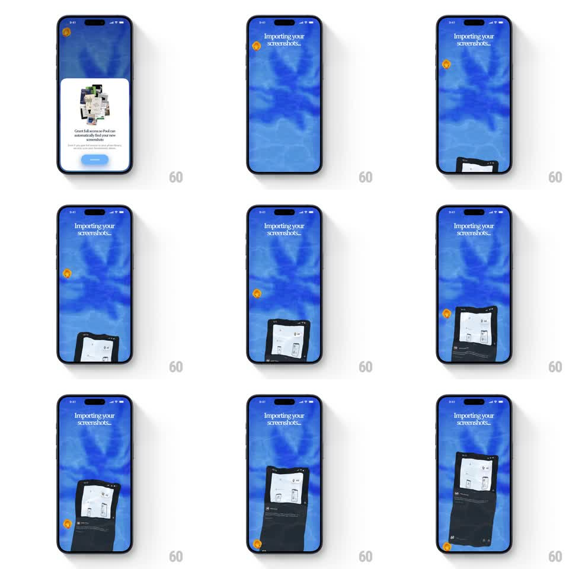

Media
Frame-by-frame

Rebuild this animation 1:1: Pool's import screen - after granting photo access, a blue watery screen reads "Importing your screenshots..." while dark screenshot cards float up from the bottom with a fluid aquatic wobble, drifting past an orange pool icon.

Rebuild this animation 1:1: Pool's import screen - after granting photo access, a blue watery screen reads "Importing your screenshots..." while dark screenshot cards float up from the bottom with a fluid aquatic wobble, drifting past an orange pool icon.
## Integration
Integration: stack-agnostic spec - springs given as stiffness/damping, timed motions as duration + curve; map every value to your framework and animation library of choice.
## Scene
Permission card first ("Grant full access so Pool can automatically find your new screenshots" with a stacked-screenshots illustration and a blue button). Then the import screen: rippling blue water-gradient background, "Importing your screenshots..." title top-left, a small orange circular icon floating mid-frame, and tall dark screenshot cards rising from the bottom edge.
## Motion spec
Pattern: buoyant float-up loop on a water field.
- The background water gradient ripples continuously (slow caustic distortion, 6s loop).
- Screenshot cards spawn below the bottom edge and float upward (~9s travel, slight ease), each on its own lane and phase.
- Each card wobbles as it rises: rotate +/- 4 degrees and a horizontal sine drift (+/- 14px, 3s), like something buoyant in water.
- Cards distort subtly with the water (scale 0.96-1.04 breathing) and fade out as they cross the top edge (last 15% of travel).
- The orange icon drifts independently (+/- 10px, 4s, rotate +/- 6 degrees).
## Calibration
- Movement is slow and floaty - nothing accelerates; buoyancy, not rockets.
- 2-3 cards are on screen at once, never crowding the title.
## Reduced motion
Cards rise straight up without wobble or distortion; water holds a static gradient.
## Don't miss
- Cards enter tilted and never fully straighten - the tilt wanders with the drift.
- The water ripple is visible behind the cards, not just in empty areas.